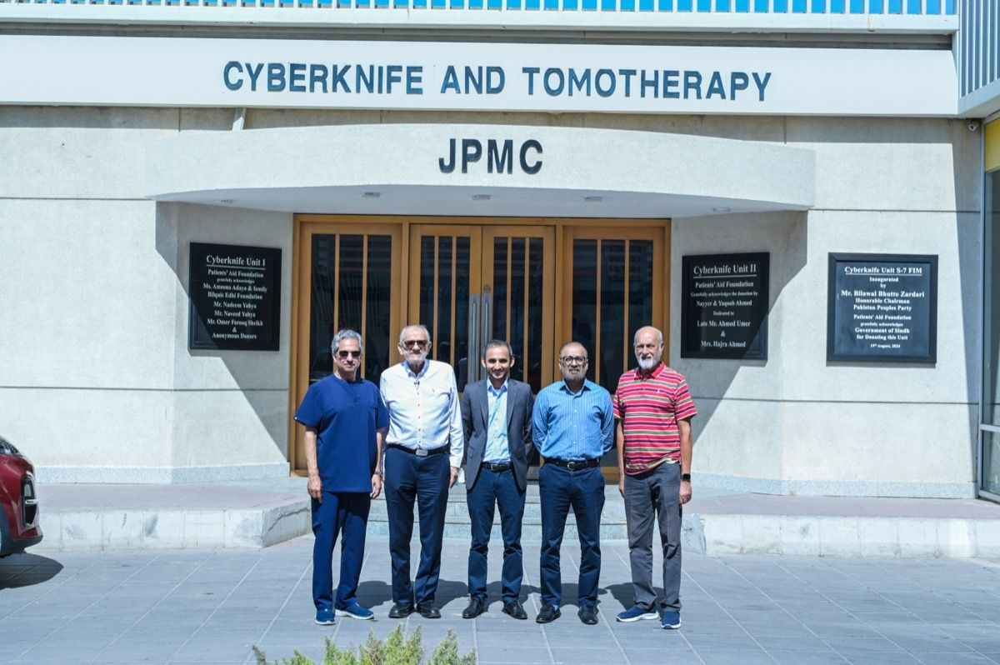
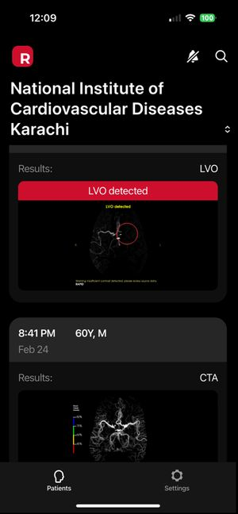
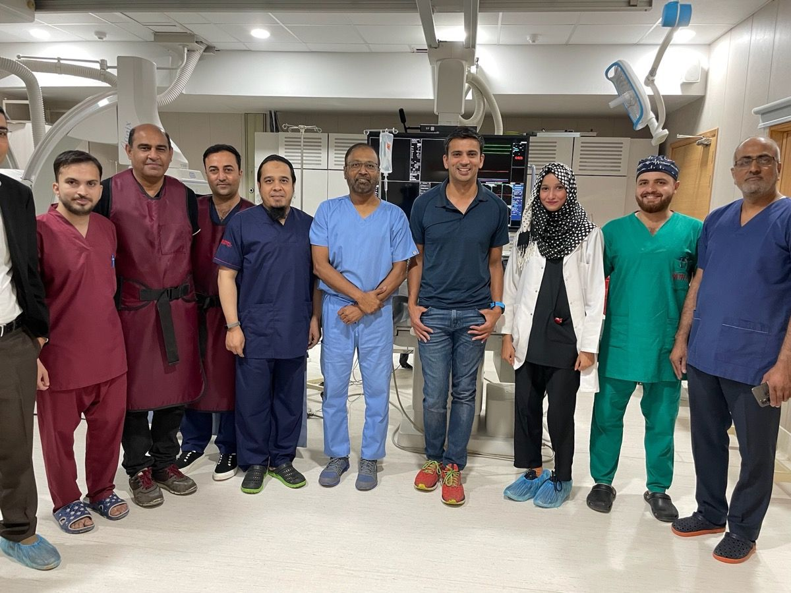
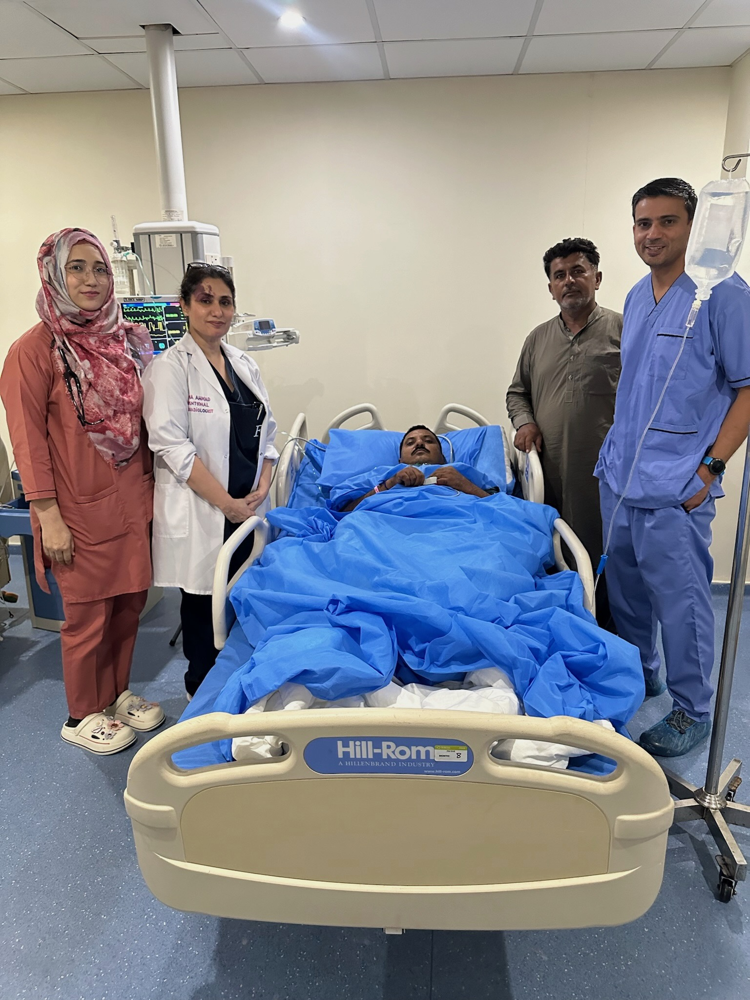
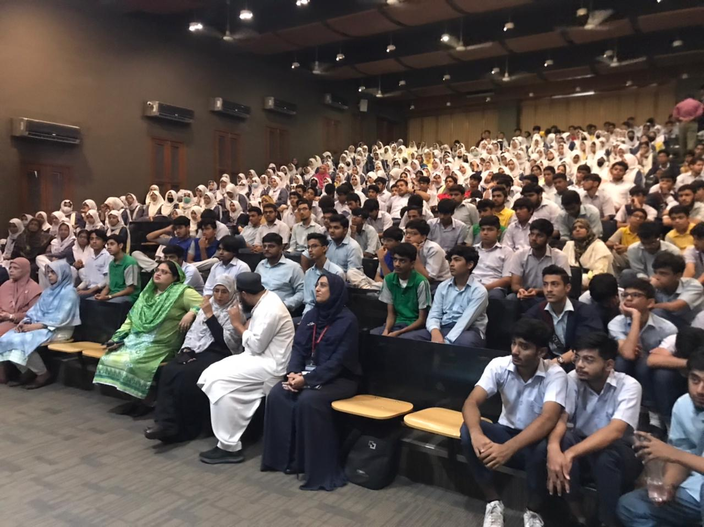

Our Impact
Transforming stroke care across Pakistan through clinical innovation, physician training, public awareness, and life-saving treatment for those who need it most.
Raho Stroke se Aagay
Comprehensive Stroke Center at Jinnah Postgraduate Medical Center
In partnership with the Patients' Aid Foundation and JPMC, we are building Pakistan's first comprehensive public-sector stroke center — a $4 million project serving Karachi's 22 million residents.
The dedicated 3rd floor of the Soorty Neurology Building will house a 15-bed Neuro-ICU with advanced neuromonitoring, 50 dedicated stroke beds, and a stroke operation theater in the new ER building.
Projected to treat 2,500–3,000 patients annually — performing 250–300 mechanical thrombectomies, 150 aneurysm coilings, 400 diagnostic angiograms, and 75 carotid stenting procedures per year. All physicians contribute pro bono. Every service completely free of charge.

What Your Donations Fund
Our Journey of Impact
Key achievements and milestones in our mission to transform stroke care across Pakistan.

PSI Begins at NICVD Karachi
Staff at NICVD — a publicly-funded, 24/7 cardiac center performing over 20,000 PCI a year — reached out for assistance in starting a Stroke Program. Our founding team began providing hands-on training and supplies, treating over 100 patients with FREE life-saving interventions.

RAPID AI Stroke Detection at NICVD
PSI contracted with RAPID AI to bring advanced stroke detection software to NICVD, making it the first center in South Asia to use AI technology for detecting acute stroke and guiding treatment decisions in real time.

First-in-Human Gravity Medical Technology Trial
Pakistan became the first global site for the Gravity Supernova Stentriever system — a next-generation device for mechanical thrombectomy. PSI advocated for and advanced human research in Pakistan, establishing the country as a leader in stroke intervention innovation.

First-in-Human SEAL Aneurysm Device Trial
Conducted the first-in-human SEAL device trial treating 8 patients with complex brain aneurysms (with 18 additional patients treated in a follow-up registry). Zero complications. Results were recognized by the US FDA, paving the way for a larger USA trial.

Hands-On Workshops & Visiting Professors
Organized hands-on stroke thrombectomy and clot removal workshops along with a visiting professor lecture series. Trained physicians in aspiration catheters, stent retrievers, flow diversion, and intrasaccular devices for aneurysm treatment.

Expansion to Lahore, Rawalpindi, & Interior Sindh
Stroke programs expanded to Pak Emirates Military Hospital in Rawalpindi, hospitals in Lahore, and NICVD satellite centers in Sukkur and Tando Mohammad Khan — extending life-saving care to communities across Pakistan.

Urdu Stroke Acronym & Public Campaigns
Created a culturally tailored Urdu stroke awareness acronym and organized over 20 awareness events including seminars, workshops, and media campaigns, educating thousands across Pakistan on recognizing stroke signs and acting fast.

Comprehensive Stroke Center at JPMC — $4M Project
In partnership with Patients' Aid Foundation and JPMC, secured a dedicated floor in the Soorty Neurology Building for Pakistan's first comprehensive stroke center with 50 stroke beds, 15-bed Neuro-ICU, biplane suite, 160-slice CT scanner, and stroke operation theater. Projected to treat 2,500–3,000 patients annually. All physicians contributing pro bono.
Iqra's Story
How your donations save lives.
A 14-Year-Old's Fight for Survival
Iqra, a 14-year-old girl from Larkana in rural Sindh, was brought to the hospital after suffering a sudden, severe headache followed by loss of consciousness. Diagnostic imaging revealed a ruptured brain aneurysm — a life-threatening condition requiring immediate neurosurgical intervention.
Her family had no financial means to pay for the complex procedure she needed. Without treatment, she would not survive. They had traveled from Larkana to Karachi seeking care, but the cost was far beyond their reach.
Through the Pakistan Stroke Initiative, Iqra received life-saving aneurysm treatment, funded entirely by donations from our supporters. The procedure was performed successfully, and Iqra recovered and returned home to her family.
There are many more patients like Iqra across Pakistan who face the same impossible choice between life-saving treatment and financial ruin. With your support, no patient is turned away because they cannot pay.
Help Patients Like Iqra
Partner Institutions
We collaborate with leading hospitals and medical institutions across Pakistan to expand stroke care access.
NICVD — Karachi
National Institute of Cardiovascular Diseases, the flagship public cardiovascular hospital where PSI established its first mechanical thrombectomy program.
NICVD Satellite Centers
Expanding stroke care across Sindh through NICVD satellite centers in Sukkur and Tando Muhammad Khan, serving rural and underserved communities and reducing treatment delays for patients across Sindh.
Farooq Hospital
A private hospital in Lahore partnering with PSI to establish stroke intervention capabilities, expanding access to thrombectomy and advanced stroke care in Punjab.
Pak Emirates Military Hospital
A leading military hospital in Rawalpindi collaborating with PSI to deliver stroke care and train physicians, extending life-saving neurointerventional services to northern Pakistan.
Ziauddin University Hospitals
Site of the first-in-human SEAL aneurysm device trial and ongoing clinical research collaboration, combining academic excellence with cutting-edge stroke intervention.
JPMC — Karachi
Jinnah Postgraduate Medical Center, the site of Pakistan's upcoming first comprehensive public-sector stroke center, set to transform stroke care for millions.
Raho Stroke se Aagay
Help Us Save More Lives
Your support directly impacts patients who have nowhere else to turn. Every dollar funds life-saving treatment.
Make a Difference — Donate Now